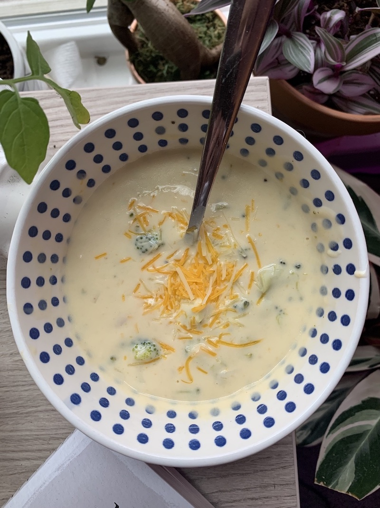

Broccoli cheddar soup is a quick and easy way to whip
up a meal for lunch that will last until dinner. Trust
me, with this recipe, you’ll want to make double because
it won’t last long! Always start with the freshest ingredients
— I purchased my broccoli and carrots from my local farmer’s market.
Choice of cheese is also essential. I highly recommended a blend
of sharp, mild, and white cheddar for the perfect balance of flavor.
And finally, a pinch of nutmeg makes all of the difference. For this
recipe, you will need:
4 Tbs butter
Half of an onion
2 cloves of garlic
4 Tbs flour
4 Cups chicken broth
Pinch of nutmeg
3 Cups of broccoli
2 carrots
2 Cups half and half
8 oz of cheddar cheese
salt and pepper to taste
Begin by sautéing the garlic and onion in the butter for 2 minutes.
Once fragrant, whisk in flour and cook until a light golden color.
Add in broth, broccoli, carrots, and seasonings. Allow vegetables to
cook for about 15 minutes or until tender. Stir in half and half and
slowly add cheese. Allow cheese to melt and serve!
PRO TIP: Allow soup to cool slightly before adding cheese. Do not allow
soup to boil once cheese is added or separation will occur.

Chow Mien
Kayla Hunt
I always crave takeout and a big container of chow mien is go-to.
This at-home recipe uses fresh chow mien noodles from the Asian mart
in my town. I believe that this have the best texture and eggy flavor
for this dish. It’s extremely important that you move quick when cooking
these ingredients on the stove. The secret to a perfect bowl of chow mien
is to use high heat — something that intimidated me at first. This dish
is even better the second day so make plenty for left overs! The ingredients
you will need are:
4 Tbs sunflower oil
one package of fresh chow mien noodles
1/2 cup bean sprouts
1/4 cup scallions
1/4 cup onion (julienned)
2 Tbs dark soy sauce
2 Tbs light soy sauce
1 Tbs sugar
1/2 Tbs oyster sauce
1 Tbs sesame oil
To prepare, first prepare noodles based on package instructions, rinse, and
set aside. Prepare the sauce by mixing both soy sauces, sugar, and oyster sauce
and set aside. Heat two tablespoons of sunflower oil in a sauté pan until shimmering.
Add onion and scallions to the pan. Cook for 2 minutes and remove them from the pan.
Add in two more tablespoons of sunflower oil to the pan and heat until shimmering.
Add in noodles and allow to cook for about 5 minutes. Add scallions and onion back to
the pan, as well as bean sprouts. Allow to cook for about three more minutes. Pour
over prepared sauce and cook until noodles have soaked up all of the liquid. Serve
immediately.